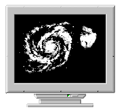

|  | Astronomy Camp Computer Facilities |
With the development of sensitive solid state light detectors and the spreading of scientific discoveries via the Internet, computers have become a mandatory tool for research astronomers.
Likewise, Astronomy Camp participants have access to the same variety of software and hardware tools. Camp faculty and counselors are well versed with the computers' capabilities. With the facilities available, Campers can:
| Feature | Camp Laptop | WebServer | Mt. Lemmon Workstation #1 | Mt. Lemmon Workstation #2 | Mt. Lemmon Workstation #3 | Mt. Lemmon Server | Minnesota Workstation |
| Name | Poseidon | Zeus | Rhea | Chronus | Castor | Apollo | Pollux |
| CPU | Intel 486DX/33 | Intel Pentium 4 CPU 2.40GHz | Intel Pentium 4 CPU 2.80GHz | Intel Pentium 4 CPU 2.80GHz | Intel Celeron CPU 1200MHz | AMD Athlon CPU 1200MHz | Intel Pentium 4 CPU 2.40GHz |
| Operating system(s) | Linux + DOS/Win3.1 | Red Hat Linux | Debian Linux | Debian Linux | Red Hat Linux | Red Hat Linux | Red Hat Linux |
| Memory | 8 MB | 512 MB | 1 GB | 1 GB | 256 MB | 512 MB | 512 MB |
| Disk Space | 0.3 GB IDE | 75 GB IDE | 110 GB IDE | 110 GB IDE | 400 MB IDE | 80 GB IDE | 75 GB IDE |
| Networking | Ethernet | Ethernet | Ethernet | Ethernet | Ethernet | Ethernet | Ethernet |
| Archival devices | floppy* | DVD/RW | DVD/RW | DVD/RW | DVD/RW | DVD/RAM(?) | DVD/RW |